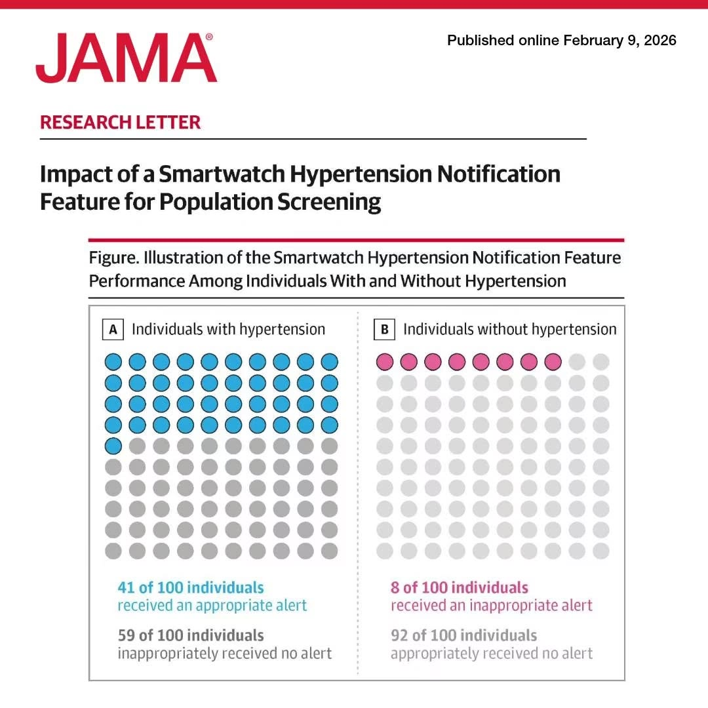

Apple Watch is a good but not perfect blood pressure monitor. I think it is better than just trusting your doctor to catch it. But it's worse than a proper BP cuff.
From JAMA: The US Food and Drug Administration recently cleared the Apple Watch #hypertension notification feature.
Researchers applied performance metrics reported by Apple to nationally representative survey data and found that, overall, 69% of individuals who receive a smartwatch alert would have hypertension, while 79% of those who do not receive an alert would not have hypertension. However, these rates vary according to subgroup characteristics, such as age and sex.
Current guidelines recommend cuff-based blood pressure measurement as the standard for diagnosing hypertension. Incorporating cuffless device technologies into public health screening efforts will require additional validation and careful attention to device accuracy to reduce misclassification and the risk of false reassurance.
Paper · JAMA · 2026Impact of a Smartwatch Hypertension Notification Feature for Population ScreeningThis cross-sectional study assesses the potential impact of a smartwatch hypertension notification feature for US adults who have not been diagnosed with hypertension.jamanetwork.com